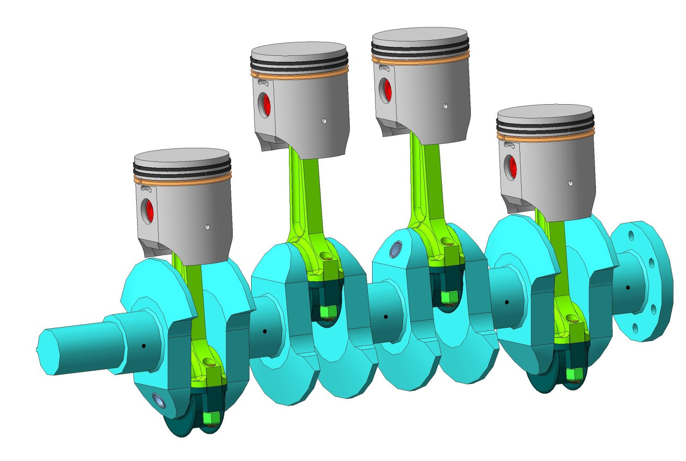

Вот эта сложная металлическая штука позволяет телеге, к которой она прикручена, ехать вперед (или назад, в бок, налево, по диагонали и вообще как угодно, хоть в космос). Вы наверное спросите (я надеюсь что спросите, потому что мне это надо), как это происходит? А я вам отвечу, что это очень легко и просто. Это будет не правда, но так как вы нажали на "лайт вершен", я должен все это объяснить так, чтобы даже человек, далекий от автомобилей и физике в целом (ты), понял о чем идет речь. Поехали...
Вообщем, есть 3 типа двигателей: карбюраторные, инжекторные и дизельные. Что означают эти три страшных слова?
Карбюратор - это узел системы питания ДВС, предназначенный для приготовления горючей смеси наилучшего состава путём смешения (карбюрации, фр. carburation) жидкого топлива с воздухом и регулирования количества её подачи в цилиндры двигателя. Такое определение дает википедия. Если переводить на понятный язык, то это такая штука, в которой смесь бензина и воздуха (как газированная водичка, только вместо воды - бензин), смешивается в самых классных и четких пропорциях, чтобы наша телега могла передвигаться по пространству. Также эта штука подает приготовленную смесь в цилиндры, где она воспламеняется и та же телега едет.
Инжектор - система подачи топлива, основное отличие от карбюраторной системы — подача топлива осуществляется путём принудительного впрыска топлива с помощью форсунок во впускной коллектор или в цилиндр. Понятно? Да. Идем дальше
Дизель - это поршневой двигатель внутреннего сгорания, работающий по принципу самовоспламенения распылённого топлива от воздействия разогретого при сжатии воздуха. Короче, дизельный двигатель - это такая штука, в которой наш газированный дизель (как бензин из карбюратора, только дизель) самовоспломеняется от сжатия воздуха. Если воздух сжать, то что произойдет? Его температура повысится. А если воздух сжать ОЧЕНЬ сильно, то его температура тоже повысится на это ОЧЕНЬ. При такой температуре смесь бахает и поршень совершает рабочий ход (крутится). Так и работает эта штука.
детальки
Корпус двигателя. Металлическая штуковина, в которой хранятся и работают все ниже перечисленные железяки.

Кривошипно-шатунный механизм – механизм, служащий для преобразования возвратно-поступательного движения во вращательное. Поршень ведь ходит по цилиндру вверх-вниз-вверх-вниз. Если его прикрутить напрямую к колесам то у нас ничего не получится, телега не поедет. Поэтому умные люди придумали такую загогулину, с помощью которой движение поршня вверх-вниз-вверх-вниз
путем магии преобразуется во вращательное движение. Это самый важный механизм в поршневом двигателе.
Коленчатый вал - это важная железяка, которая входит в кривошипно-шатунный маханизм. По сути, это такая палка, на которую крепятся шатуны. Шатун - это железка, которая соединяет поршень с коленвалом, и все это вместе образует кривошипно-шатунный Обычно коленвал изготавливается из прочных сталей, так как подвержен износу.
Поршень. Не менее важный узел системы. Поршень во время работы двигателя крутит кривошипно-шатунный механизм, к которуму прикреплен шатуном, а кривошипно-шатунный механизм уже крутит колеса машины. То есть, именно поршень создает "энергию", которая двигает нашу телегу. Но как же двигается сам поршень? Очень просто - путем микровзрывов. Смесь топлива с воздухом взрывается от сжатия ее поршнем, который был предварительно раскручен стартером при запуске двигателя, этот взрыв толкает поршень вниз, потом с помощью кривошипно-шатунного механизма поршень идет вниз, а в цилиндр подается новая порция смеси, а цикл повторяется заново.
Маховик. Штука, которая уменьшает вибрации при работе двигателя
Газораспределительный механизм. Штука, которая регулирует подачу и вывод отработанного топлива
Андрей Company. Все имеющиеся у меня права защищены


 Коленчатый вал - это важная железяка, которая входит в кривошипно-шатунный маханизм. По сути, это такая палка, на которую крепятся шатуны. Шатун - это железка, которая соединяет поршень с коленвалом, и все это вместе образует кривошипно-шатунный Обычно коленвал изготавливается из прочных сталей, так как подвержен износу.
Коленчатый вал - это важная железяка, которая входит в кривошипно-шатунный маханизм. По сути, это такая палка, на которую крепятся шатуны. Шатун - это железка, которая соединяет поршень с коленвалом, и все это вместе образует кривошипно-шатунный Обычно коленвал изготавливается из прочных сталей, так как подвержен износу.
 Поршень. Не менее важный узел системы. Поршень во время работы двигателя крутит кривошипно-шатунный механизм, к которуму прикреплен шатуном, а кривошипно-шатунный механизм уже крутит колеса машины. То есть, именно поршень создает "энергию", которая двигает нашу телегу. Но как же двигается сам поршень? Очень просто - путем микровзрывов. Смесь топлива с воздухом взрывается от сжатия ее поршнем, который был предварительно раскручен стартером при запуске двигателя, этот взрыв толкает поршень вниз, потом с помощью кривошипно-шатунного механизма поршень идет вниз, а в цилиндр подается новая порция смеси, а цикл повторяется заново.
Поршень. Не менее важный узел системы. Поршень во время работы двигателя крутит кривошипно-шатунный механизм, к которуму прикреплен шатуном, а кривошипно-шатунный механизм уже крутит колеса машины. То есть, именно поршень создает "энергию", которая двигает нашу телегу. Но как же двигается сам поршень? Очень просто - путем микровзрывов. Смесь топлива с воздухом взрывается от сжатия ее поршнем, который был предварительно раскручен стартером при запуске двигателя, этот взрыв толкает поршень вниз, потом с помощью кривошипно-шатунного механизма поршень идет вниз, а в цилиндр подается новая порция смеси, а цикл повторяется заново.
 Маховик. Штука, которая уменьшает вибрации при работе двигателя
Маховик. Штука, которая уменьшает вибрации при работе двигателя
 Газораспределительный механизм. Штука, которая регулирует подачу и вывод отработанного топлива
Газораспределительный механизм. Штука, которая регулирует подачу и вывод отработанного топлива